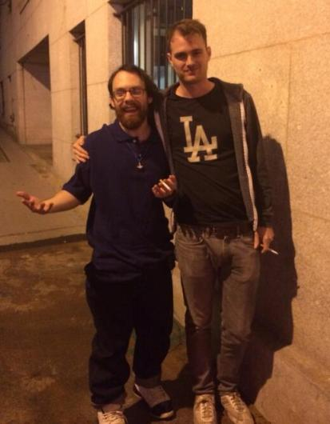

We need a Daily News Site
November 9th, 2020
It’s hard for me to say exactly when I got out of Donor politics, and onto what was then called the alt-right. What I do know is that the Daily Stormer was the most important site for that, followed actually somewhat distantly with The Daily Shoah. A daily updating news site is a fantastic recruitment tool, and something we desperately need back. And I say desperately need back despite the DeadMemeStormer technically still being in existence, because it is so horrible now that it is beyond parody.

But what should we expect from this guy...
Back in the day, the DS was great. You show up every day for some articles. You read said articles. At the bottom of the page the highest rated comments from the forum would be displayed, which was a great feature. Anglins writing from about 2015-2017 is arguably some of the finest ever put on the internet, and I am not exaggerating when I say that Anglin pre-meltdown was quite possibly the greatest satirist ever. Certainly he was the most prolific, and always of a high quality.
One by one everything got worse. First Anglin deleted the comments on the articles, for no reason. As I said, there used to be the top 10 comments from the forum displayed on the website, which were usually as good as the articles. One day this was gone. Next Anglin himself went down the shitter, and is now awful to the point of parody. As far as me personally, I was banned from the forum during the Groyper Wars, for tepidly supporting TRS. I went to the site about once every 3 months after that, and it was amazing how you could see the decline more starkly with those discrete jumps.
The forum itself was then deleted at some time, for some bizarre reason. Maybe there was one given, but I have no idea. Anyway, he then ghetto'd all his supporters on the cringiest forum "Gamer Uprising." First of all, I'm almost 30. I don't want to be a part of something called "Gamer Uprising," and even when I was younger, that is actually genuinely cringey. Even more so half a decade after GamerGate.
Pictured: A man almost in his 40's
Currently we can see him shilling for Donald Trump and telling his supporters to go get vanned in the streets, despite being adamant for years that street action was terrible and existed to get you vanned by the FBI. I guess he meant street action on behalf of white people, and not the Zionist entity known as the GOP.
Weev, the webmaster
He also stresses constantly the point of “optics,” despite being a 5’4 facially hideous manlet who unironically talks about how women need to be raped and put in cages. His webmaster is Weev, another 5’4 facially hideous manlet who is a mixed race jew with a swaztika tattoo. Their big deal is that you need to be “serious guys,” like Nick Fuentes, a facially hideous 5’7 mexican LARPing as the leader of an “America First,” movement by making videos in his mother’s basement.
Nick Fuentes, master of optics
These are the serious guys. The guys who understand that voting for Sheldon Adelson’s GOP is crucially important, because if too many illegal Mexicans move to the US, black unemployment might go up. The guys who understand that defending Harvey Weinstein's rape of over a hundred goy women is not simply morally just, but is great optics to defend.

Pictured: Man defended by the Good Optics Crowd
As far as the forum goes, I checked in there and it's like a sad parody of the Finkelthinked. Literally 100% Republican shilling plus "please don't go to any genuine pro-white organization," plus "Mike Enoch is a fed." The atmosphere is absolutely cult-like, and beyond unproductive.
Get Swaztika tattoos and support the GOP. -Weev
It's this bizarre schizophrenic wasteland, but it's all made worse because I recognize a lot of the forum names there, and got to know them pretty well back when I posted on TGK. I'd say 90% of the audience belongs to us, but Weev and Anglin have them trapped over there using tried and true cult tactics, plus tons of censorship. After all, as I stated before, I got banned for pointing out that Anglin was calling the TRS guys feds for not wanting Trump to win, whilst simultaneously pointing out that Jews wanted Trump to win because it was overall bad for White People.
A quick look at the section dedicated to Articles is just fucking sad. Each article has around 2-10 replies. Even more bizarre the remaining cultists have been duped into retarded boomer DR3 narratives, one going so far as to post about Justice Clarence Thomas looking down at Biden and calling him a "high tech lyncher." Keep in mind, just two or three years ago this would have been presented as intentionally absurd so as to be slapped down and ridiculed by Anglin and everybody on TGK.
Support Justice Clarence Thomas against those DEMONrats.
"Shell of itself," is easily the best way to describe the DailyStormer nowadays. I've had similar experiences online before, usually based around fandom of something that used to be popular. Where you see a few of the old names posting, and you feel sort of bad for them that they never moved on with their lives, but also in a really weird way you feel happy for them because they've found some semblence of community, but then you feel sad again because of how worthless it is. That's the feeling I get both from the site, as well as the forum.
And the DailyHarveyWeinsteinDefense feels that way, despite being an American News Site that just had a highly controversial contested election. The quality has sunk to such an unreadable level.
We need something to fill the void.